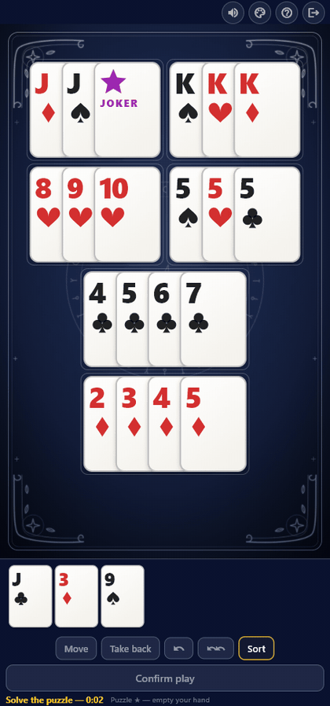
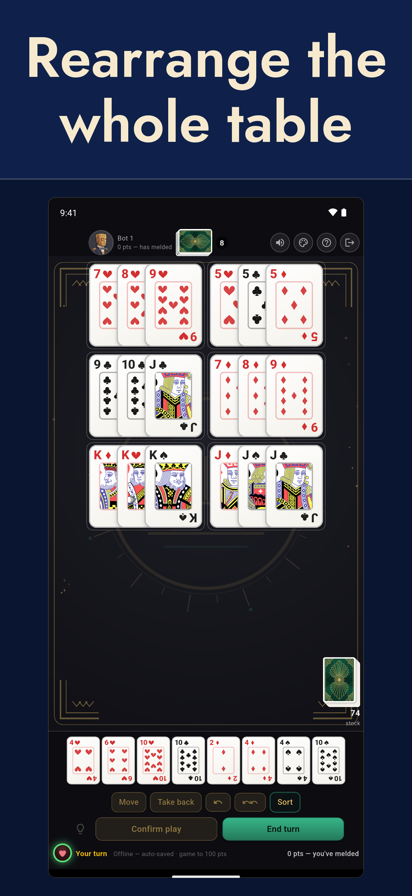
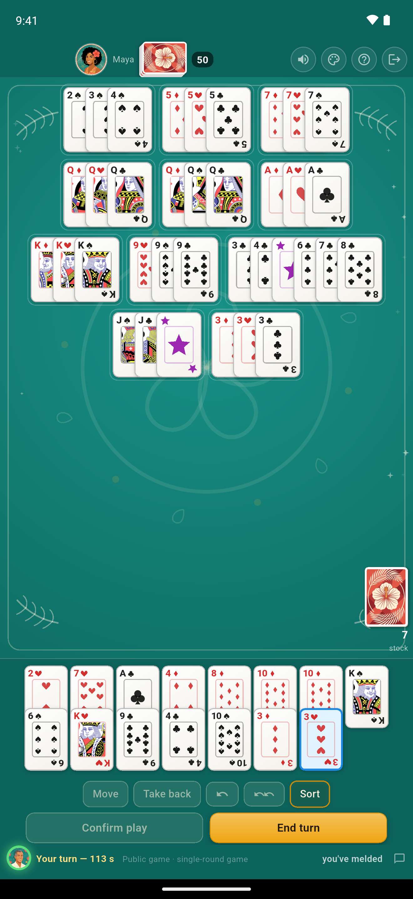
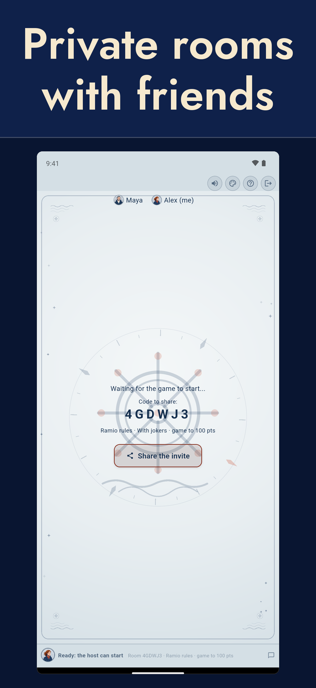
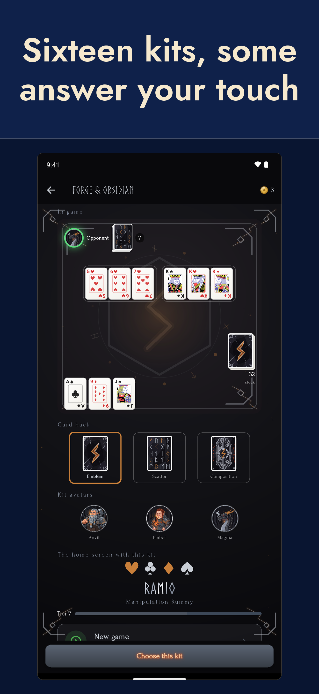

Français · English · Español · Deutsch · Italiano · Português · Polski · Türkçe · Română · Magyar · العربية
Ramio
A Ramio kártyával játszott tolvaj römi, online, a barátaiddal, bárhol is legyetek. Nem csak lerakod a lapjaidat: szétszeded és újraépíted, ami már az asztalon van, hogy a tieid is beférjenek.

Próbáld ki a Ramiót
Az app nyílt bétában van, ingyenes és reklámmentes.
Android — letöltés a Google Playről iPhone — csatlakozz a TestFlight bétához
iPhone-on a bétát az Apple TestFlight alkalmazása szolgáltatja.




A tolvaj römi szabályai
A tolvaj römit 2-4 játékos játssza két 52 lapos paklival, dzsókerrel vagy anélkül. A játéknak sok neve van: angolul Manipulation Rummy, Németországban Räuber-Rommé, Olaszországban Machiavelli, Brazíliában Mexe-Mexe, Franciaországban rami voleur vagy rami chinois. A lényeg:
A cél
Elsőként megszabadulni minden lapodtól úgy, hogy kombinációkban az asztalra rakod őket:
- Sor: legalább három egymást követő lap ugyanabból a színből (az ász állhat a 2 előtt vagy a király után, de a sor soha nem fordul át: K-A-2 nem megengedett).
- Hármas / négyes: három vagy négy azonos értékű lap, mind különböző színből.
Így zajlik egy kör
- Minden játékos 13 lapot kap.
- A körödben húzol egy lapot, majd lerakhatsz kombinációkat. Eldobás soha nincs: a kezed csak lerakással fogy.
- Nyitás: az első lerakásodban lennie kell egy tiszta hármas sornak — három egymást követő lap ugyanabból a színből, dzsóker nélkül.
- A nyitás után szabadon átrendezheted az asztalt (mindenki kombinációit mozgathatod, szétbonthatod, összerakhatod), hogy a lapjaid beférjenek — feltéve, hogy a kör végén az egész asztal újra érvényes.
- A dzsóker bármelyik lapot helyettesíti. Az asztalon újra felhasználható az átrendezéskor, amíg az asztalon marad. A dzsóker opcionális: minden játszma dzsókerrel vagy anélkül indul.
A menet vége és a pontozás
A menet akkor ér véget, amikor egy játékos kiüríti a kezét. A többiek büntetőpontokat számolnak: 2-től 10-ig a lap értéke, figurák 10, ászok 11, dzsóker 20 vagy 50 pont (az app jelenlegi verziójában 50). Ha a talon elfogy, mielőtt bárki befejezné, a menet megáll, és mindenki a saját kezében maradt lapokat számolja. A büntetőpontok menetről menetre összeadódnak; a játszma véget ér, amint egy játékos eléri a 100 pontot, és a legkevesebb ponttal rendelkező nyer. Az app egymenetes játszmát is kínál, ideális egy gyors meccshez.
A Ramio app
- Privát szobák barátokkal (6 karakteres kód) vagy nyilvános játszmák
- Egyedül a gép ellen, akár offline is, négy szinten
- Több mint 300 átrendezős fejtörő és mindenkinek közös napi feladvány
- Gyorsasági párbajok: ugyanaz a fejtörő mindenkinek, a leggyorsabb nyer
- Dzsókerrel vagy anélkül, pontos játszma vagy egy menet
- Barátok, üzenetek, Elo-ranglista, statisztikák és előzmények
- Körülbelül húsz téma: posztók, kártyahátak és avatárok
- Tizenegy nyelven elérhető
- Automatikus újracsatlakozás, ha megszakad a kapcsolat
- Nincs reklám, a szabályokat a szerver érvényesíti: csalni lehetetlen
Adatvédelem és kapcsolat
- Adatvédelmi tájékoztató (angolul)
- Fiók törlése (angolul)
- Kapcsolat: contact@quintaingames.com